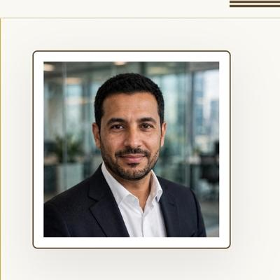

Every surgeon deserves the right instrument.
No matter where they operate — Riyadh or Casablanca, Cairo or Istanbul.
The problem we saw
Across the Middle East and North Africa, talented surgeons work with one hand tied behind their back. Not for lack of skill — for lack of access. The precision instruments that European and American surgeons take for granted are hard to find, slow to arrive, and priced as if the region doesn't matter.
Procurement departments order from catalogs. Distributors add their margins. And the surgeon — the person whose hands actually hold the instrument — is the last to be consulted and the first to compromise.
What we're building
Surgronic exists to put the surgeon back at the center. We source precision surgical instruments directly from manufacturers — in Turkey, Germany, China — and deliver them to individual surgeons and institutions across MENA, without the distributor markup and without the wait.
Name the instrument. We'll find it. That's not a slogan — it's the entire business model. You tell us what you need, we source it to your specification, inspect it, photograph it, and ship it only after you've approved it.
Why the Arab world
Because this is where we come from, and this is where the gap is widest. MENA surgeons perform world-class procedures with second-tier supply chains. That isn't just inefficient — it's unjust.
We started in Istanbul, at the crossroads of Europe and the Middle East, specifically to serve this region. Our team speaks your language — literally, in Arabic, French, Turkish, and English. Our pricing adapts to your currency. Our WhatsApp line answers within one business day.
How we work
Surgeon first, always. We'd rather lose a sale than recommend the wrong instrument. Every order starts with your specification, not our catalog. Inspection photos before dispatch. Written confirmation before commitment. No middlemen between you and the person sourcing your tools.
We're not a marketplace. We're the partner who picks up the phone.
People, not a portal.
The people you'll actually talk to when you order.
Yusuf Mohamed
Co-Founder
Leads sourcing and supplier partnerships across Turkey, China, and the GCC.
Dounia Filali
Commercial Manager — North Africa & Europe
Your contact for Morocco, Algeria, Tunisia, and European markets.

Khalid Al-Harbi
Commercial Manager — Middle East & Asia
Your contact for Saudi Arabia, UAE, Gulf states, and Asian markets.